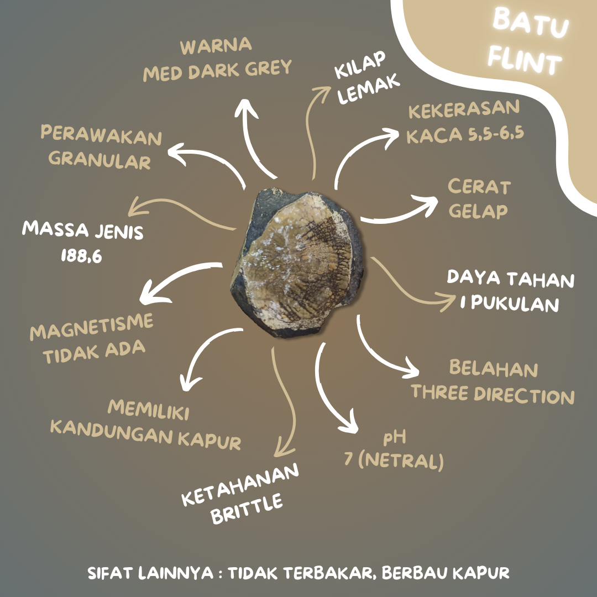
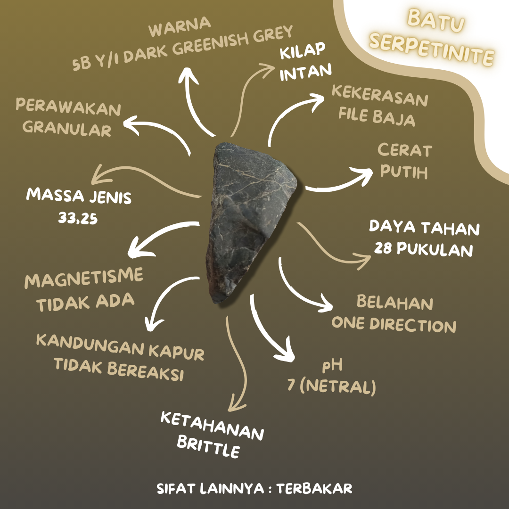

Batu Kapur (limestone)
Proses Pembentukan Batu Kapur
Pengendapan didalam air laut, ini dikarenakan adanya unsur mineral kalsit yang berupa fosil dari kerangka binatang seperti kerang maupun binatang lain yang hidup diperairan laut. Setelah proses tersebut terjadi selama ratusan hingga ribuan tahun dengan terus adanya penumpukan atau penimbunan yang dihasilkan dari fosil kerangka dari binatang. Dalam pembentukan batu kapur, air hujan akan menimbulkan reaksi terhadap penumpukan kerangka tersebut yang mana air hujan ini membantu serta mempercepat proses terbentuknya batu kapur (limestone).
Mineral dalam batu kapur
1. Kalsit
2. Endapatan Travertine
3. Stalagnit
4. Stalagsit (CaCO3)
Mineral karbonat umum ditemukan berasosiasi dengan batu kapur
adalah aragonite (CaCO3), merupakan mineral metastable karena pada
kurun waktu tertentu dapat berubah menjadi kalsit. Mineral lainnya
yang umum ditemukan tetapi dalam jumlah kecil adalah Siderit
(FeCO3), ankarerit (Ca2MgFe(CO3)4), dan magnesit (MgCO3).
Jenis dan Variasi Batu Kapur
Variasi: Bahan pengotor ini menyebabkan variasi warna pada batu kapur, yang dapat berupa putih, abu-abu muda, abu-abu tua, coklat, merah, hingga hitam. Jenis: Batu gamping/kapur dengan kandungan beberapa butir ( <10 ) di dalam matriks lumpur karbonat disebut mudstone dan bila mudstone tersebut mengandung butiran yang tidak saling bersinggungan disebut wackestone. Lain halnya apabila antar butirannya saling bersinggungan disebut packstone atau grainstone.
Penyebaran Batu Kapur
Penyebaran batu kapur terbanyak tersebar di daerah pulau Jawa,
seperti
1. Kediri
2. Surabaya
3. Surakarta
4. Klaten
5. Wonogiri
6. Kedu
7. Yogyakarta
8. Priangan Serta beberapa ada daerah pegunungan di selatan.
Didaerah Sumatera sekitar pesisir pantai pada serta Bukit Tinggi
Pemanfataan Batu Kapur
1. Perekat (Semen, Bahan Mortar, Plesteran )
2. Hidrolisis (Industri Sabun)
3. Bahan absorbsi (Bahan Pemutih)
4. Pelarut (Cat Casein)
5. Bahan dehidrasi (Pengering Udara)
6. Flokulan (Gula)
7. Fluk (Pembuatan keramik)
Batu Flint atau Rijang
Rijang (SiO2) adalah batuan endapan silikat kriptokristalin dengan permukaan yang licin (glassy). Rijang biasanya sering di sebut sebagai batu api oleh orang awam. Disebut "batu api" karena jika diadu dengan baja atau batu lain akan memercikkan bunga api yang dapat membakar bahan kering. Rijang terbentuk di lautan dalam dan batuan ini sering digunakan sebagai batu permata karena memiliki warna yang biasanya cerah seperti merah hati.
Sifat fisik rijang (SiO2), berwarna merah hati, kelabu tua, biru, hitam, coklat tua, belahan/pecahan tidak sempurna/choncoidal, kekerasan 6,5-8 skala mosh, sistim kristal hexagonal, berat jenis 2,6 gr/cm3, kemagnetan diamagnetit dan tidak teransparan. Pemanfaatan batu rijang ini biasanya digunakan untuk indkator dalam laut (abyssal) dan pada zaman batu, rijang banyak di gunakan untuk membuat senjata dan peralatan seperti pedang, mata anak panah, pisau, kapak, dan lain-lain. Tetapi yang paling populer rijang digunakan untuk ornamen-ornamen dan batu permata.
Rijang banyak tersebar di Indonesia, diantaranya: Daerah istimewah aceh, Jawa barat, Jawa tengah, Jawa timur, Kalimantan barat, Kalimantan selatan, Sulawesi selatan, Nusa tenggara timur NTT
Batu Serpentinite
Serpentinit terbentuk melalui proses alterasi hidrotermal pada batuan ultrabasa, terutama peridotit mantel. Batuan ini umumnya berasal dari peridotit mantel yang termasuk dalam rangkaian ofiolitik, sering kali disebut sebagai "peridotit orogenik tipe Alpine." Serpentinit biasanya muncul di permukaan bumi, terutama di sabuk lipatan orogenik.
Proses serpentinisasi terjadi ketika cairan hidrotermal bersirkulasi melalui mantel peridotit yang panas. Cairan ini, yang dilepaskan dari blok subduksi, memiliki suhu di bawah 500 °C, pH di atas 10, dan konsentrasi pCO₂ yang rendah. Kombinasi kondisi ini memicu reaksi kimia yang mengubah peridotit menjadi serpentinit.
Interaksi antara air laut dan batuan ultrabasa mengubah mineral silikat primer, seperti olivin dan piroksen, menjadi mineral serpentin. Mineral serpentin terdiri dari tiga polimorf utama: lizardit, antigorite, dan chrysotile, yang secara optik sulit dibedakan satu sama lain di bawah mikroskop.
Batu Basalt
Basalt adalah jenis batuan beku vulkanik yang terbentuk melalui pendinginan cepat lava basa yang keluar dari gunung berapi dan membeku di permukaan bumi. Batuannya memiliki ciri-ciri khas, seperti warna gelap yang berkisar antara abu-abu tua hingga hitam, serta tekstur halus yang dihasilkan oleh proses pendinginan yang cepat. Komposisi mineral utama dalam basalt terdiri dari plagioklas, piroksen, dan olivin, yang memberi batuan ini kekerasan cukup tinggi dengan skala 5,5-6,5 pada skala Mohs. Selain itu, basalt memiliki berat jenis relatif tinggi dan pecahan yang tajam serta tidak rata, dengan belahan yang terjadi dalam satu arah.
Keunikan basalt juga terletak pada sifat magnetiknya yang sedikit tertarik pada magnet (paramagnetik), serta reaksi kimianya yang tidak bereaksi dengan larutan asam klorida (HCl), meskipun dapat terbakar dan mengeluarkan bau besi. Dalam beberapa kasus, basalt juga menunjukkan struktur serat (fibrous) yang memberikan kesan tertentu pada batuan ini. Meskipun memiliki ketahanan terhadap pukulan yang rendah dan cenderung mudah pecah, basalt tetap memiliki nilai penting dalam berbagai industri. Batu ini digunakan dalam pembuatan bahan bangunan seperti tegel dan pondasi, juga sebagai bahan baku industri poles, serta dalam pembuatan material canggih seperti serat basalt yang dimanfaatkan dalam sektor otomotif.
Basalt banyak ditemukan di berbagai tempat di dunia, terutama di daerah-daerah yang memiliki aktivitas vulkanik seperti wilayah Indonesia, Islandia, dan Hawai. Pembentukan basalt terjadi saat lava basa yang kaya akan magnesium dan besi mengalir keluar dari perut bumi, mendingin dan mengeras di permukaan. Proses ini menghasilkan struktur batuan yang berbeda dibandingkan dengan batuan beku lainnya, seperti granit, yang terbentuk lebih lambat di bawah permukaan bumi dan memiliki komposisi mineral yang lebih kaya akan kuarsa.
Secara keseluruhan, basalt merupakan batuan yang memiliki banyak kegunaan praktis, terutama dalam konstruksi dan industri, serta dapat menjadi bahan penelitian geologi lebih lanjut untuk memahami proses geologis di bumi.
Batu Kuarsa
Mineral kuarsa adalah mineral yang terbentuk dari senyawa kimia yang terdiri dari satu bagian silikon dan dua bagian oksigen. Klasifikasi kimia kuarsa adalah silikat. Komposisi kimia kuarsa adalah SiO2. Kuarsa adalah mineral yang paling melimpah di kerak bumi. Kuarsa sangat tahan terhadap pelapukan baik pelapukan fisik maupun pelapukan kimia. Kuarsa adalah salah satu mineral yang banyak memiliki kegunaan (nilai penting).Mineral kuarsa adalah mineral yang paling melimpah dan tersebar luas yang dapat ditemukan di kerak bumi. Kuarsa dapat ditemukan di seluruh bagian dunia. Kuarsa dapat terbentuk pada semua suhu/temperatur. Mineral kuarsa dapat ditemukan pada batuan beku, batuan metamorf, dan batuan sedimen. Daya tahan kuarsa terhadap pelapukan fisik dan kimia menjadikan kuarsa sebagai mineral dominan dan tahan lama. Kuarsa dengan berbagai karakteristik yang dimiliki mempunyai berbagai kegunaan. Kegunaan kuarsa dapat dikaitkan dengan sifat fisik dan kimianya. Kuarsa memiliki kekerasan 7 (tujuh) pada Skala Mohs sehingga menjadikan kuarsa sebagai mineral yang sangat tahan lama. Kuarsa memiliki sifat listrik dan tahan panas yang bermanfaat digunakan dalam produk elektronik. Kilau, warna, dan diaphaneity kuarsa membuat kuarsa berguna sebagai batu permata dan juga dalam pembuatan kaca. Kegunaaan (nilai penting) kuarsa adalah untuk industri gelas, digunakan sebagai abrasive, dan digunakan sebagai pasir pengecoran. Kuarsa juga digunakan dalam industri perminyakan, digunakan untuk kristal kuarsa, dan sebagai batu permata. Kuarsa sangat baik digunakan sebagai batu permata karena keras, tahan lama, tahan panas dan cemerlang. Varietas kuarsa populer yang banyak digunakan sebagai permata meliputi: amethyst, citrine, rose quartz, smoky quartz, dan aventurine. Agate dan jasper juga merupakan varietas kuarsa dengan struktur mikrokristalin. Karena merupakan salah satu mineral yang paling tersebar luas di dunia, kuarsa memiliki, tergantung pada zona geologis pembentukannya, struktur kristal dan karakteristik mineralogi dan kimia yang berbeda, dengan berbagai corak warna kuarsa . Ketika kuarsa murni dan bening, kuarsa sepenuhnya transparan dan tidak berwarna . Ketika memiliki kotoran , cacat atau inklusi batuan dan mineral lain, mineral ini mulai mengambil warna kuarsa yang berbeda. Kuarsa sebagai mineral permata (gem mineral) dibagi menjadi dua kelompok, yaitu : bentuk kristalin berbutir kasar dan berbutir halus/mikro kristalin. Meskipun demikian semuanya mempunyai kesamaan susunan kimia dan struktur kristal; perbedaannya terletak pada metode pembentukan, ukuran butir dan pengotoran yang membuat kuarsa menjadi beraneka warna (Hurlbut et al, 1979).
Batu Tufa Travertine
Travertin merupakan endapan karbonat yang terendapkan secara kimiawi terbentuk di sekitar rembesan, mata air, dan sepanjang sungai kecil serta terkadang di danau terdiri dari kalsit atau aragonit yang terbentuk pada lingkungan zona vados atau freatik yang pada umumnya dangkal. travertine dihasilkan dari proses pengendapan kalsium karbonat yang dapat ditemukan di mulut sumber air panas atau di gua kapur. Travertin merupakan bagian dari batuan sedimen karbonat terestrial atau darat yang dibentuk oleh pengendapan atau prespitasi mineral karbonat dari larutan dalam tanah dan permukaan air, dan atau secara pemanasan dari mataair panas (Pentecost, 2005).
Klasifikasi Travertin telah dikemukakan oleh beberapa ahli. Eisenstuck (1949) dalam Scholle, dkk, (1983) mengklasifikasikan travertin berdasarkan derajat hubungan antar material yang dikandung oleh travertin tersebut. Atas dasar tersebut, travertin dibagi menjadi travertin padat atau keras (Hard Travertine) yaitu travertin dimana material-material penyusunannya saling berikatan dengan erat dan travertin lunak atau tidak padat (Incoherent Travertine) yaitu travertin dimana material-material penyusunannya tidak saling mengikat dengan kuat. batu travertine berasal dari Italia, namun dapat juga ditemukan di beberapa negara seperti Meksiko, Turki, dan Peru. Ciri-ciri dari batu ini yaitu memiliki penampilan berserat atau konsentris dengan warna bermacam macam seperti putih, cokelat dan varietas berwarna krem.
Ciri utama travertine adalah permukaan yang berlubang. Lubang-lubang pada batu alam travertine tersebar di seluruh permukaan dengan ukuran yang berbeda-beda. Travertine sendiri berada pada kisaran angka 4-5 pada skala Mohs. Hal ini berarti, beberapa jenis material atau batu alam lain yang memiliki skala lebih besar dapat menggores travertine. Material tersebut termasuk kaca jendela dan mata pisau. Nilai atau tingkat kekerasan travertine berada pada kisaran yang sama dengan batu alam lain seperti marmer dan limestone.